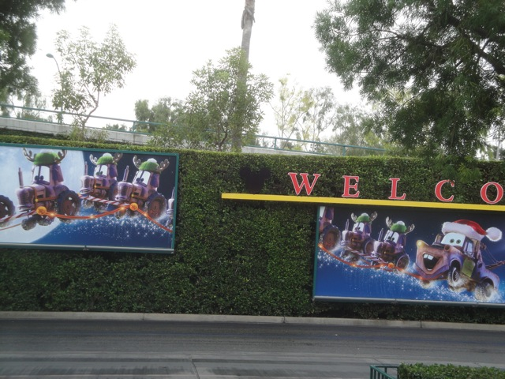
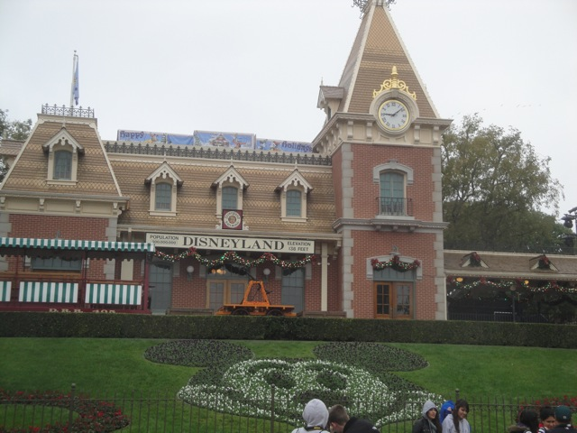
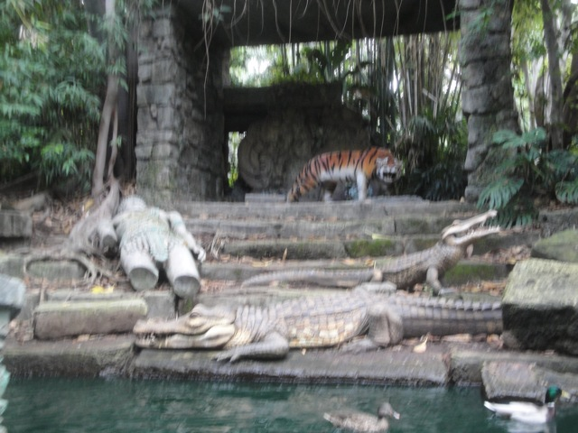
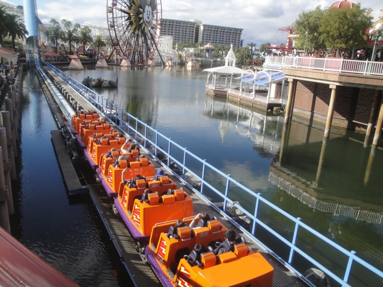

Disneyland Xmas 2012

All right. Christmas Time and New Years is now over. But hey I took a fun trip to the Disneyland Resort for Christmas and even though its now January, its time to share all the fun with you all where we will try and make progress on getting Jen over her fears.

YAY!!! WE'RE HERE!!!!
"After waiting and waiting, I'm finally here. It looks so beautiful!!!"
Of all the rides to pick for our first one, we did this one first.
Ugh. The boats are now jammed up. Dammit Kevin!!!
Just because the ride sends you to hell does not mean its scary.
 "The whole point of this Disneyland Trip!!! RUINED!!!!!!"
"The whole point of this Disneyland Trip!!! RUINED!!!!!!"
Come on. Its just a drop. Its not scary.
"I love this ride so much I just want to strip and take off all my skin and organs!!!"
I'm a tour guide on the Jungle Cruise Ride. Skipper Dan is the name.

Bengal Tigers can jump over 20 ft.
 That's an African Bull Elephant.
That's an African Bull Elephant.
CLIFF JUMP!!!!
There it is. The backside of water. What have I done with my life?
 Out of all the Disney Villians out there, why was I stuck with you as a teacher?
Out of all the Disney Villians out there, why was I stuck with you as a teacher?

Come on. Its not scary Jen.
Hey. At least there's a single riders line so that I can ride it.
I've been to Eureka, CA. There is nothing special about that town.
Please show me all across the state that I live in.
Hey Alex!!! Having fun in Napa!!? =)
 Yeah. Its time for us to head on over and check out Radiator Springs Racers.
Yeah. Its time for us to head on over and check out Radiator Springs Racers.
Fresh straight from the ruined shores of the Gulf Coast.
I really like this bottle theming in the line. Yeah, its cheesy, but I like it.
 *Sigh* George Carlin, what are you doing here?
*Sigh* George Carlin, what are you doing here?
It may not be Test Track, but this ride is still awesome.
"THE MAD T PARTY IS AWESOME!!! NOW MY NEW VIDEO CAMERA CAN SHOOT THIS GREAT FOOTAGE OF THE MAD T PARTY!!!! I CAN'T WAIT TO SPEND TWO CONSECUTIVE WEEKS AT DISNEYLAND AND ENJOY THE MAD T PARTY OVER AND OVER AND OVER AND OVER AND OVER AND OVER AGAIN!!!!!"
This building is freaking awesome. Do I need to say more?
I didn't even have time to fully animate this since we never came back. Oh well.
All right. Time to head back to Disneyland.
Wow. Before today, I think the last time I rode Pooh was back in 2006.
Well with some convincing, I managed to convince Jen on Splash Mtn. And she liked it. Which I was impressed with since she was concerned about drops on Pirates of the Carribean earlier this morning. Does Jen still have a long ways to go before getting over her fears? I mean, its not X2, but at least its SOMETHING in the right direction, which is better than nothing.
Meh. What else do I have to say except...Dennys. Its just Dennys.
And to finish off the night, we saw the Christmas version of World of Color.
I still consider this to be one of my favorite theme park shows.
Quick burn any traces that would've informed others that we were here. BURN IT!!! BURN IT ALL TO THE GROUND!!!!!!
Home